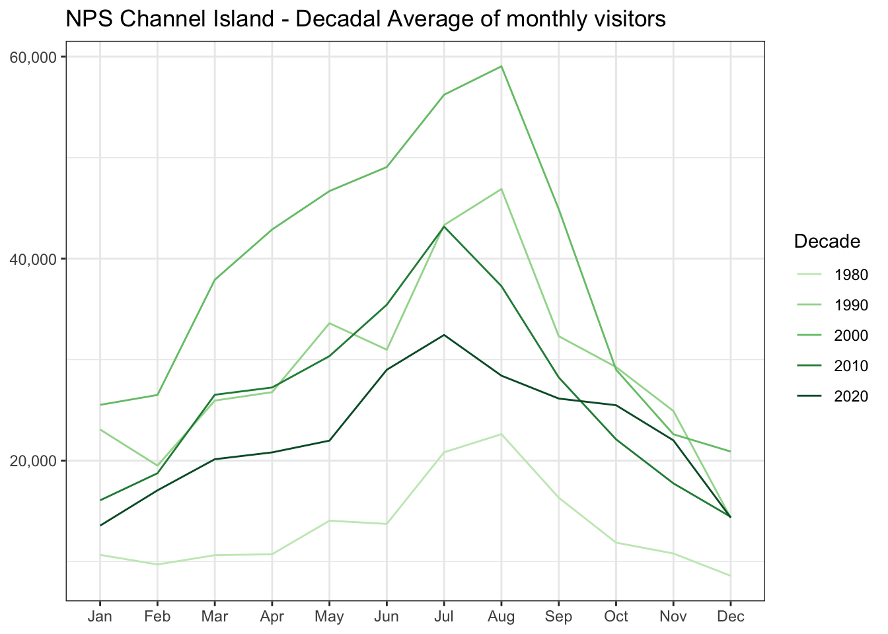

library(readr)
library(dplyr)
library(ggplot2)
library(plotly)
library(RColorBrewer)
library(scales)
library(DT)
library(here)Interactive Data Viz
Libraries
Load the NPS data
ca_np_long <- here("data_processed", "nps_ca-np-rec-visit_long.csv") %>%
read_csv()Rows: 4512 Columns: 4
── Column specification ────────────────────────────────────────────────────────
Delimiter: ","
chr (2): Park, Month
dbl (2): Year, NoVisitors
ℹ Use `spec()` to retrieve the full column specification for this data.
ℹ Specify the column types or set `show_col_types = FALSE` to quiet this message.Add the decade
ca_np_decade <- ca_np_long %>%
filter(Year > 1979) %>% # We only have 1979 in the 70s
mutate(Decade = Year - (Year %% 10),
Month = factor(Month, levels = month.abb, labels = month.abb)
) %>%
relocate(Decade, .after = Park)Compute the decadal average
ca_np_decade_avg <- ca_np_decade %>%
group_by(Park, Decade, Month) %>%
summarise(Decadal_avg = as.integer(mean(NoVisitors, na.rm=TRUE))) %>%
ungroup()`summarise()` has regrouped the output.
ℹ Summaries were computed grouped by Park, Decade, and Month.
ℹ Output is grouped by Park and Decade.
ℹ Use `summarise(.groups = "drop_last")` to silence this message.
ℹ Use `summarise(.by = c(Park, Decade, Month))` for per-operation grouping
(`?dplyr::dplyr_by`) instead.Let’s have a look at the data for the Channel Islands
Filter for this specific park
channel_island_data <- ca_np_decade_avg %>%
filter(Park == "Channel Islands")Make it an interactive table using the DT R package:
channel_island_data %>%
select(-Park) %>%
datatable(caption = 'Table 1: NPS Channel Island - Decadal Average of monthly visitors')channel_island_p <- ggplot(data = channel_island_data,
mapping = aes(x = Month, y = Decadal_avg, group = Decade, color = as.character(Decade))) +
geom_line() +
scale_color_brewer(name = "Decade", palette = "Greens") +
scale_y_continuous(labels = comma) +
ggtitle("NPS Channel Island - Decadal Average of monthly visitors") +
theme_bw() +
theme(axis.title.x = element_blank(), axis.title.y = element_blank())
channel_island_p
ggplotly(channel_island_p)